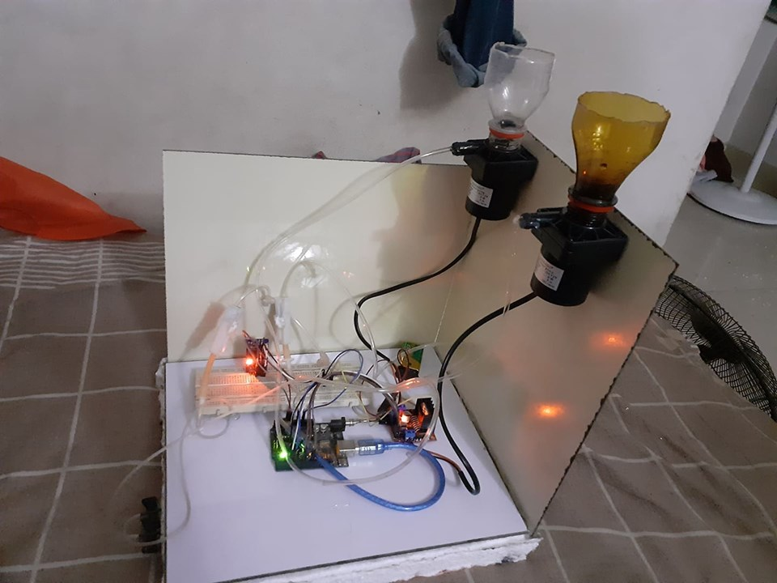

|

|
The Smart Injector: A Robotic Approach of
Automated Multiple Injection System for
Critical Patients using Real Time Clock Feature [2019]
In the rural world of medical services, we
generally notice a lot of havoc which generally happens
in the hospitals, clinics and related other medical
centers. The conditions of Intensive Care Units (ICU) of
the rural areas are quite intolerable because of the lack
of qualified nurses. Doctors generally prescribe multiple
injections for a single patient for each day. Nurses are
responsible for the injection process but unfortunately
they fail to perform the injection process very often in
proper prescribed time in proper amount. This
malpractice of treatment quite often results in the
terrible sufferings of the ICU patients and sometimes a
few patients even die. This study aims to minimize the
hazard at the highest accuracy level possible. The
research relates to the functionality of Real Time Clock
(RTC) which provides the activation of automated time
system and triggers the microcontroller's machinery to
act according to the time. According to the doctor's
prescribed time, injection's medicine will be flowing
inside the pipelines and will be injected to the body of
the patient through a cannula. In this study, Arduino
microcontroller, RTC DS3231 time module, HX 711
weight sensors, relay modules, hydraulic pump motors,
wifi shield, resistors, MOSFET and breadboard have
been used. Following the prescribed time of doctor, the
RTC module programs the time for the activation of the
microcontroller. The microcontroller activates the
hydraulic pump motors following the programmed
times. The pump motors then create a vacuum
environment inside the pipeline and pass the medicine
fluid for injection inside the patient's body through the
multiple channel-single cannula. This is consisted of
three units: electrical circuitry unit, mechanical unit
and timer program with reprogram process unit. The
research were carried out through the tests of each and
every units to verify that they were working precisely
and were manifesting the expected outputs.
|